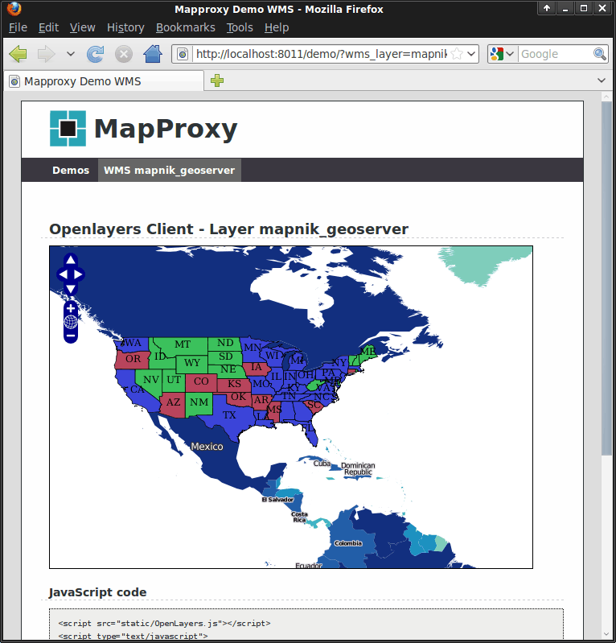

MapProxy¶
Proxy WMS & tile services¶
MapProxy speeds up mapping applications by pre-rendering and integrating maps from multiple sources and storing in a local cache. Layers can be made transparent, projections can be changed, multiple map layers can be transformed into one, watermarks can be added, and more…
MapProxy is flexible and scales from simple to complex use-cases: from a single tile cache for an OpenLayers web client to a central SDI node that combines, unifies and accelerates dozens of distributed WMS services.

Core Features¶
{kind=link}
- Input sources:
- Services:
WMS (1.0.0-1.3.0)
TMS
WMTS
KML SuperOverlays
- Tile cache:
stores identical images just once (e.g. ocean tiles)
cache tiles in the filesystem, MBTiles/SQLite, ArcGIS Compact Cache, S3, Redis, Riak, or CouchDB
add watermark to tiles
- Source options:
limit sources to geometries (from Shapefile for example)
add transparency to opaque layers
merge multiple sources
reproject WMS and tile sources to other SRS
- WMS Features:
build layer trees from different sources
create
GetMapresponses from cache with support for free-zooming and any projection (for any Desktop GIS)accelerates existing WMS 10 to 100 times
respond to
GetLegendGraphicrequestscascade
GetFeatureInforequests with optional XSL transformationson-the-fly reprojection
convert WMS versions and image formats
- Security:
flexible and powerful authorization API
fine-grained control over services and layers
restrict access to polygon areas (for WMS and tile services)
integrate with existing user databases and authentication methods
- Powerful tools:
efficient seed tool for cache pre-filling that can seed polygon areas with Shapefiles, GeoJSON, PostGIS or WKT geometries
export cached tiles to other formats
calculate scales and show grid configurations
- Other features:
simple but powerful configuration format (YAML/JSON)
OpenLayers based demo client
run multiple WMS services in one MapProxy instance
add attribution lines to the images
support for non-image raster data like DEMs
manipulate image bands to create grayscale- or false-color images
many more
Implemented Standards¶
MapProxy implements the following open specifications:
OGC WMS 1.0.0, 1.1.0, 1.1.1, 1.3.0
OGC WMTS 1.0.0 (KVP and RESTful)
OSGeo TMS 1.0.0
OGC KML 2.2 SuperOverlays
Details¶
Website: https://mapproxy.org/
Licence: Apache Software License 2.0
Software Version: 1.13.0
Supported Platforms: Linux, Mac, Windows
Support: https://mapproxy.org/support